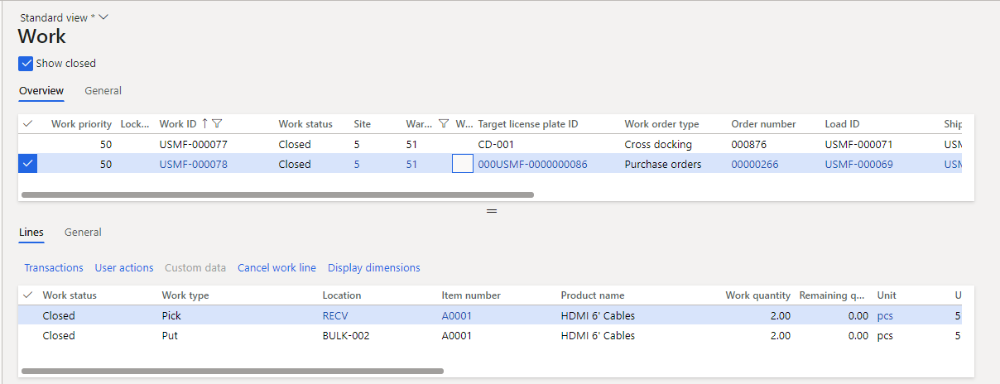

Geplantes Crossdocking
Important
Dynamics 365 for Finance and Operations hat sich zu speziell entwickelten Anwendungen entwickelt, mit denen Sie bestimmte Geschäftsfunktionen verwalten können. Weitere Informationen zu diesen Änderungen finden Sie im Dynamics 365-Lizenzierungshandbuch.
In diesem Thema wird das erweiterte geplante Crossdocking beschrieben. Crossdocking ist ein Lagerortprozess, bei dem die für eine Bestellung erforderliche Lagerbestandsmenge direkt vom Eingang oder der Erstellung zum richtigen ausgehenden Dock oder Stagingbereich geleitet wird. Der gesamte verbleibende Lagerbestand aus der eingehenden Quelle wird durch den regulären Einlagerungsprozess an den richtigen Lagerort geleitet.
Durch Crossdocking können Mitarbeiter eingehende Einlagerungen und ausgehende Kommissionierungen vom Lagerbestand überspringen, der bereits für eine ausgehende Bestellung markiert ist. Daher wird die Häufigkeit, mit der der Lagerbestand berührt wird, nach Möglichkeit minimiert. Da weniger Interaktion mit dem System besteht, wird außerdem die Zeit- und Platzersparnis im Lagerortfertigungsbereich erhöht.
Bevor Crossdocking ausgeführt werden kann, muss der Benutzer eine neue Crossdocking-Vorlage konfigurieren, in der die Bezugsquelle und andere Anforderungen für das Crossdocking angegeben sind. Beim Erstellen der ausgehenden Bestellung muss die Position mit einer eingehenden Bestellung markiert werden, die denselben Artikel enthält.
Zum Zeitpunkt des Eingangs eingehender Bestellungen erkennt das Crossdocking-Setup automatisch den Bedarf an Crossdocking und erstellt die Bewegungsarbeit für die erforderliche Menge basierend auf dem Setup der Lagerplatzrichtlinie.
Note
Lagerbuchungen sind nicht unregistriert, wenn Crossdocking-Arbeiten abgebrochen werden, auch wenn die Einstellung für diese Funktion in den Lagerortverwaltungsparametern aktiviert ist.
Funktion für geplantes Crossdocking aktivieren
Bevor Sie das erweiterte geplante Crossdocking verwenden können, muss die Funktion in Ihrem System aktiviert sein. Administratoren können mit der Einstellung Funktionsverwaltung den Status der Funktion überprüfen und ggf. aktivieren. Dort wird die Funktion folgendermaßen aufgelistet:
- Module: Lagerortverwaltung
- Funktionsname: Geplantes Crossdocking
Einstellung
Ladebuchungsmethoden erneut generieren
Das geplante Crossdocking wird als Ladebuchungsmethode implementiert. Nachdem Sie die Funktion aktiviert haben, müssen Sie die Methoden erneut generieren.
Gehen Sie zu Lagerortverwaltung > Einrichtung > Ladebuchungsmethoden.
Wählen Sie im Aktivitätsbereich Methoden erneut generieren aus.
Wenn die Regeneration abgeschlossen ist, sollte eine Methode mit Methodenname im Wert von planCrossDocking angezeigt werden.
Schließen Sie die Seite.
Crossdocking-Vorlage erstellen
Wechseln Sie zu Lagerortverwaltung > Einrichtung > Arbeit > Crossdocking-Vorlagen.
Wählen Sie im Aktivitätsbereich Neu aus, um eine Vorlage zu erstellen.
Legen Sie im Header die folgenden Werte fest:
Sequenz: 1
Dieses Feld definiert die Reihenfolge, in der Vorlagen ausgewertet werden.
Crossdocking-Vorlagen-ID: 51
Beschreibung: Lagerort 51
Richtlinien zur Bedarfsfreigabe: Vor dem Eingang der Lieferung
Lagerort: 51
Das Setup im Inforegister Planung steuert, wie die Vorlage funktioniert. Legen Sie die folgenden Werte fest:
Bedarfsanforderungen: Keine
Dieses Feld definiert die Anforderungen des Bedarfslagerbestands. Wenn der Bedarf vor der Freigabe mit der Lieferung verknüpft werden muss, wählen Sie Markierung aus. Wenn der Bedarf vor der Freigabe gegen die Lieferung reserviert werden muss, wählen Sie Auftragsreservierung aus.
Lagerplatztyp: Versandorte
In diesem Feld wird definiert, ob für die Crossdocking-Arbeit die Staging-/Ladeorte aus der Sendung oder ob Lagerplatzrichtlinien verwendet werden sollen, um eigene Staging-/Ladeorte zu finden.
Arbeitsvorlage: Lassen Sie dieses Feld leer.
Dieses Feld definiert die Arbeitsvorlage, die beim Erstellen von Crossdocking-Arbeiten verwendet werden soll.
Bei Eingang der Lieferung erneut validieren: Nein
Diese Option definiert, ob die Lieferung während des Eingangs erneut validiert werden soll. Wenn diese Option auf Ja festgelegt ist, werden sowohl das maximale Zeitfenster als auch der Ablauftagebereich überprüft.
Zeitfenster validieren: Ja
Diese Option definiert, ob das maximale Zeitfenster ausgewertet werden soll, wenn eine Bezugsquelle ausgewählt wird. Wenn diese Option auf Ja festgelegt ist, werden die Felder verfügbar, die sich auf das maximale und minimale Zeitfenster beziehen.
Maximales Zeitfenster: 5
Dieses Feld definiert den maximalen Zeitraum, der zwischen Lieferungseingang und Bedarfsabgang zulässig ist.
Maximale Zeitfenstereinheit: Tage
Minimales Zeitfenster: 0
Dieses Feld definiert den minimalen Zeitraum, der zwischen Lieferungseingang und Bedarfsabgang zulässig ist.
Minimale Zeitfenstereinheit: Tage
Ablauftagebereich: 0
First Expiry First Out (FEFO)-Kriterien: Dieses Feld definiert die maximale Anzahl von Tagen zwischen dem Ablaufdatum der ersten ablaufenden Charge, die sich derzeit im Lagerort befindet, und der Charge, die empfangen wird.
Geben Sie im Inforegister Bezugsquellen die Liefertypen an, die für diese Vorlage gültig sind. Wählen Sie Neu aus, und legen Sie dann die folgenden Werte fest:
- Sequenznummer: 1
- Bezugsquelle: Bestellung
Eine Arbeitsklasse erstellen
Wechseln Sie zu Lagerortverwaltung > Einstellungen > Arbeit > Arbeitsklassen.
Wählen Sie im Aktivitätsbereich Neu aus, um eine Arbeitsklasse zu erstellen.
Legen Sie die folgenden Werte fest:
- Arbeitsklassen-ID: CrossDock
- Beschreibung: Crossdocking
- Arbeitsauftragstyp: Crossdocking
Erstellen einer Arbeitsvorlage
Gehen Sie zu Lagerortverwaltung > Einstellungen > Arbeit > Arbeitsvorlagen.
Legen Sie im Feld Arbeitsauftragstyp Crossdocking fest.
Wählen Sie im Aktivitätsbereich Neu aus, um auf der Registerkarte Übersicht eine Position hinzuzufügen.
Legen Sie die folgenden Werte für die neue Position fest:
- Sequenznummer: 1
- Arbeitsvorlage: 51 Crossdocking
- Arbeitsvorlagenbeschreibung: 51 Crossdocking
Wählen Sie Speichern aus, um das Inforegister Arbeitsvorlagendetails verfügbar zu machen.
Wählen Sie im Inforegister Arbeitsvorlagendetails die Option Neu aus, um dem Raster eine Position hinzuzufügen.
Legen Sie die folgenden Werte für die neue Position fest:
- Arbeitstyp: Entnahme
- Arbeitsklassen-ID: CrossDock
Wählen Sie Neu aus, um eine weitere Position hinzuzufügen, und legen Sie die folgenden Werte fest:
- Arbeitstyp: Einlagern
- Arbeitsklassen-ID: CrossDock
Wählen Sie Speichern aus, und bestätigen Sie, dass das Kontrollkästchen Gültig für die Vorlage 51 Crossdocking ausgewählt ist.
Note
Die Arbeitsklassen-IDs für die Arbeitstypen Entnehmen und Einlagern müssen gleich sein.
Lagerplatzrichtlinien erstellen
Wechseln Sie zu Lagerortverwaltung > Einstellungen > Lagerplatzrichtlinien.
Legen Sie im linken Bereich im Feld Arbeitsauftragstyp Crossdocking fest.
Wählen Sie im Aktivitätsbereich Neu aus, und legen Sie die folgenden Werte fest:
- Sequenznummer: 1
- Name: 51 Crossdocking einlagern
- Arbeitstyp: Einlagern
- Standort: 5
- Lagerort: 51
Wählen Sie Speichern aus, um das Inforegister Positionen verfügbar zu machen.
Wählen Sie im Inforegister Positionen die Option Neu aus, um dem Raster eine Position hinzuzufügen.
Legen Sie die folgenden Werte für die neue Position fest:
- Von Menge: 1
- Bis Menge: 1000000
Wählen Sie Speichern aus, um das Inforegister Lagerplatzrichtlinienaktivitäten verfügbar zu machen.
Wählen Sie im Inforegister Lagerplatzrichtlinienaktivitäten die Option Neu aus, um dem Raster eine Position hinzuzufügen.
Legen Sie die folgenden Werte für die neue Position fest:
- Name: Ladebereichstor
- Feste Standortnutzung: Feste und nicht feste Lagerplätze
Wählen Sie Speichern aus, um die Schaltfläche Abfrage bearbeiten in der Symbolleiste Lagerplatzrichtlinienaktivitäten verfügbar zu machen.
Wählen Sie Abfrage bearbeiten aus, um den Abfrageeditor zu öffnen.
Stellen Sie auf der Registerkarte Bereich sicher, dass die folgenden zwei Positionen konfiguriert sind:
Position 1:
- Tabelle: Lagerorte
- Abgeleitete Tabelle: Lagerorte
- Feld: Lagerort
- Kriterien: 51
Position 2:
- Tabelle: Lagerorte
- Abgeleitete Tabelle: Lagerorte
- Feld: Lagerplatz
- Kriterien: Ladebereichstor
Wählen Sie OK aus, um den Abfrageeditor zu schließen.
Erstellen eines Menüelements für ein mobiles Geräts
Gehen Sie zu Lagerortverwaltung > Einstellungen > Mobiles Gerät > Menüoptionen für mobiles Gerät.
Wählen Sie in der Liste der Menüpunkte im linken Bereich die Option Kaufeinlagerung aus.
Wählen Sie Bearbeiten aus.
Wählen Sie im Inforegister Arbeitsklassen die Option Neu aus, um dem Raster eine Position hinzuzufügen.
Legen Sie die folgenden Werte für die neue Position fest:
- Arbeitsklassen-ID: CrossDock
- Arbeitsauftragstyp: Crossdocking
Wählen Sie Speichern aus.
Szenario
Eine Bestellung erstellen
Befolgen Sie diese Schritte, um eine Bestellung als Bezugsquelle zu erstellen.
Wechseln Sie zu Beschaffung > Bestellungen > Alle Bestellungen.
Wählen Sie im Aktivitätsbereich Neu aus.
Legen Sie im Dialogfeld Bestellung erstellen die folgenden Werte fest:
- Kreditorenkonto: 104
- Lagerort: 51
Wählen Sie OK aus, und notieren Sie sich die Bestellnummer.
Im Inforegister Bestellpositionen wird eine neue Position hinzugefügt. Legen Sie die folgenden Werte für diese Position fest:
- Artikelnummer A001
- Menge 5
Auftrag erstellen
Befolgen Sie diese Schritte, um einen Auftrag als Bedarfsquelle zu erstellen.
Wechseln Sie zu Vertrieb und Marketing > Aufträge > Alle Aufträge.
Wählen Sie im Aktivitätsbereich Neu aus.
Legen Sie im Dialogfeld Auftrag erstellen die folgenden Werte fest:
- Debitorenkonto: US-002
- Lagerort: 51
Wählen Sie OK.
Im Inforegister Auftragspositionen wird eine neue Position hinzugefügt. Legen Sie die folgenden Werte für diese Position fest:
- Artikelnummer A001
- Menge 3
Geplantes Crossdocking erstellen
Befolgen Sie diese Schritte, um das geplante Crossdocking aus dem Auftrag zu erstellen.
Wählen Sie auf der Seite Auftragsdetails für den Auftrag, den Sie gerade erstellt haben, im Aktivitätsbereich auf der Registerkarte Lagerort in der Gruppe Aktivitäten die Option An Lager freigeben aus.
Die Aktivität „An Lager freigeben“ erstellt eine Versand- und Ladeposition für die Auftragsposition und versucht, Lagerbestand zuzuordnen.
Es wird eine Informationsnachricht angezeigt. Sie erhalten außerdem die folgende Warnmeldung: „Für Welle XXXX wurde keine Arbeit erstellt. Weitere Informationen finden Sie im Protokoll zum Arbeitserstellungsverlauf.“ Dieses Verhalten wird erwartet, da sich kein Lagerbestand im Lagerort befindet.
Wählen Sie im Inforegister Auftragspositionen im Menü Lagerort die Option Lieferdetails aus.
Die Seite Lieferdetails wird angezeigt und zeigt die Lieferung, die für den Auftrag erstellt wurde.
Überprüfen Sie, ob im Inforegister Ladungspositionen das Feld Geplante Crossdocking-Menge auf 3 festgelegt ist. Da im Lagerort kein Lagerbestand verfügbar war, aber innerhalb des in der Crossdocking-Vorlage definierten Zeitfensters eine gültige Bezugsquelle eintrifft, wurde die Crossdocking-Menge erstellt.
Wählen Sie im Inforegister Ladungspositionen die Option Geplantes Crossdocking aus, um die Details des erstellten Crossdocking anzuzeigen.
Crossdocking verarbeiten
Bestelleingang mit der Warehouse Mobile App
Das System erhält die Menge von 5 aus der Bestellung an den Empfangsort und erstellt zwei Arbeiten.
Die erste Arbeits-ID, die erstellt wird, hat einen Arbeitsauftragstyp im Wert von Crossdocking und ist mit dem Auftrag verknüpft. Sie hat eine Menge von 3 und wird zum endgültigen Versandort geleitet, damit sie sofort versendet werden kann.
Die zweite Arbeits-ID, die erstellt wird, hat einen Arbeitsauftragstyp im Wert von Bestellungen und ist mit der Bestellung verknüpft. Sie hat die verbleibende Menge von 2, für die das Crossdocking nicht durchgeführt wurde und zur Einlagerung bestimmt ist.
Melden Sie sich beim mobilen Gerät als ein Benutzer im Lagerort 51 an.
Gehen Sie zu Eingehend > Kaufempfang.
Geben Sie im Feld PONum Ihre Bestellnummer ein.
Geben Sie im Feld Menge den Wert 5 ein.
Wählen Sie OK.
Legen Sie auf der nächsten Seite im Feld Artikel A0001 fest.
Wählen Sie OK.
Bestätigen Sie auf der nächsten Seite die Werte PONum, Artikel und Menge, indem Sie OK auswählen.
Sie erhalten die Nachricht „Arbeit abgeschlossen“.
Wählen Sie Abbrechen aus, um zu beenden.
Einlagerung zu Crossdocking und Bulk
Derzeit haben beide Arbeits-IDs das gleiche Zielkennzeichen. Um die nächsten Schritte ausführen zu können, müssen Sie die Arbeits-ID und die Zielkennzeichen-ID erhalten. Sie können diese Informationen aus den Arbeitsdetails für die Bestellposition und die Auftragsposition abrufen. Alternativ können Sie zu Lagerortverwaltung > Arbeit > Arbeitsdetails gehen und nach Arbeit filtern, wo der Wert von Lagerort 51 ist.
Gehen Sie auf dem mobilen Gerät zu Eingehend > Kaufeinlagerung, und geben Sie das Zielkennzeichen von der Arbeit ein.
Geben Sie im Feld ID die Zielkennzeichen-ID aus den Arbeitsdetails ein.
Die Crossdocking-Auswahlseite zeigt den Kommissionierort (RECV), das Zielkennzeichen (Kennzeichen), den Artikel (A0001) und die Menge (3).
Wählen Sie OK.
Geben Sie im Feld Ziel-LP ein Zielkennzeichen für die Kennzeichen-ID ein, die am Versandort eingelagert (Crossdocking) werden soll. Sie können eine beliebige Kennzeichen-ID Ihrer Wahl auswählen.
Wählen Sie OK.
Geben Sie auf der nächsten Seite im Feld ID die Zielkennzeichen-ID ein.
Wählen Sie OK.
Bestätigen Sie die Arbeit zur Auswahl der verbleibenden Menge von 2, und wählen Sie dann OK aus.
Wählen Sie auf der nächsten Seite Fertig aus, um den Kommissioniervorgang zu beenden und den Einlagerungsprozess zu beginnen.
Die mobile App zeigt Ihnen den Lagerplatz und das Kennzeichen an, an dem Sie den Artikel ablegen möchten.
Bestätigen Sie den Bulk-Lagerplatz Einlagern, indem Sie OK auswählen.
Bestätigen Sie auf der nächsten Seite das Crossdocking Einlagern, indem Sie OK auswählen.
Sie erhalten die Nachricht „Arbeit abgeschlossen“.
Wählen Sie Abbrechen aus, um zu beenden.
Die folgende Abbildung zeigt, wie die abgeschlossene Crossdocking-Arbeit in Microsoft Dynamics 365 Supply Chain Management aussehen könnte.
